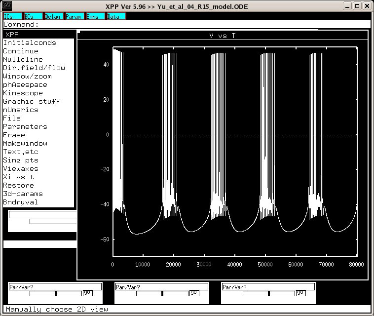

This is the readme for the model associated with the publication: Yu X, Byrne JH, Baxter DA (2004) Modeling interactions between electrical activity and second-messenger cascades in Aplysia neuron R15. J Neurophysiol 91:2297-311 The biophysical properties of neuron R15 in Aplysia endow it with the ability to express multiple modes of oscillatory electrical activity, such as beating and bursting. Previous modeling studies examined the ways in which membrane conductances contribute to the electrical activity of R15 and the ways in which extrinsic modulatory inputs alter the membrane conductances by biochemical cascades and influence the electrical activity. The goals of the present study were to examine the ways in which electrical activity influences the biochemical cascades and what dynamical properties emerge from the ongoing interactions between electrical activity and these cascades. The model proposed by Butera et al. in 1995 was extended to include equations for the binding of Ca(2+) to calmodulin (CaM) and the actions of Ca(2+)/CaM on both adenylyl cyclase and phosphodiesterase. Simulations indicated that levels of cAMP oscillated during bursting and that these oscillations were approximately antiphasic to the oscillations of Ca(2+). In the presence of cAMP oscillations, brief perturbations could switch the electrical activity between bursting and beating (bistability). Compared with a constant-cAMP model, oscillations of cAMP substantially expanded the range of bistability. Moreover, the integrated electrical/biochemical model simulated some early experimental results such as activity-dependent inactivation of the anomalous rectifier. The results of the present study suggest that the endogenous activity of R15 depends, in part, on interactions between electrical activity and biochemical cascades. Usage: To run in default setting start the model under linux with: xppaut Yu_et_al_04_R15_model.ODE Select Initialconds->Go Wait a bit for the 80000 ms simulation to complete. Select Window/zoom -> Window and fill in X Lo:0, X Hi:80000 Y Lo:-70, Y Hi:50 You should then see this graph: 